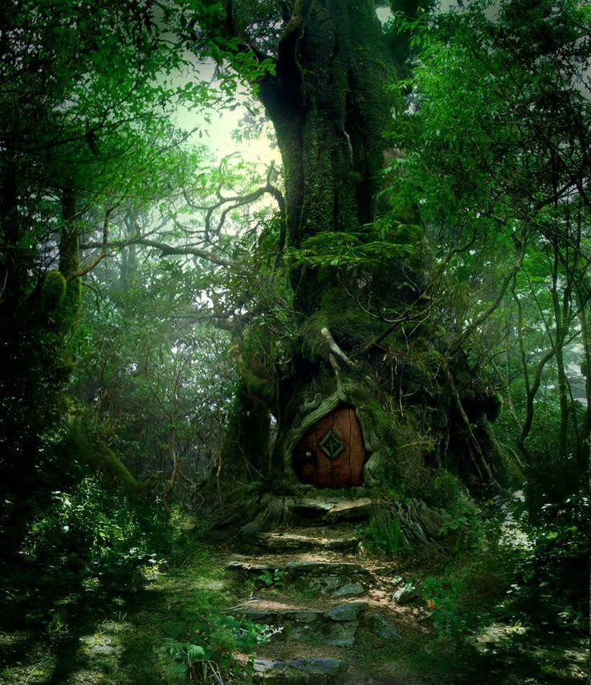

Bora lá Nami!
Ao seguir a coruja, você percebe que ela está seguindo um caminho misterioso que leva a uma porta escondida em uma árvore gigantesca. Você entra nesta porta e descobre um grande sociedade de corujas gigantes. Uma delas percebe sua ilustre presença e vai
em sua direção.
